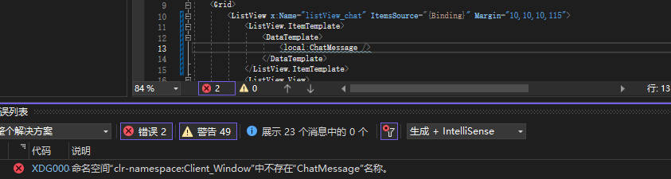
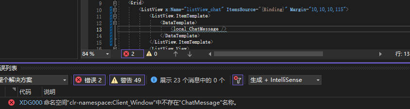

今天遇到一个WPF的问题，就是你如果创建了一个自定义控件，然后把它重命名，之后如果你另一个窗口调用了它，即使你改成新名称，也会出现类似下图的错误：
然后尝试过了重启vs2022，也没用。如果改回去名字就又好了。
解决方案：不用管它的错误，直接点运行，编译器不会报错。结束运行之后就好了！今天遇到一个WPF的问题，就是你如果创建了一个自定义控件，然后把它重命名，之后如果你另一个窗口调用了它，即使你改成新名称，也会出现类似下图的错误：
然后尝试过了重启vs2022，也没用。如果改回去名字就又好了。
解决方案：不用管它的错误，直接点运行，编译器不会报错。结束运行之后就好了！